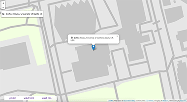

6 | March 9, 2017
According to Don’t Make Me Think by Steve Kurg, user testing is the act of watching people use your website (or app, product, prototype, etc…) with the intent of discovering what does and doesn’t work. Ideally, test subjects will be a member of the with the target audience, but it is also useful to conduct UX research with other demographics; more feedback is always good. It is important to user test, because it will save people money in the long run. It allows you to see what needs to be fixed as you develop your website, instead of “completing” it, only to find that many users find it difficult to use.
To make the most out of user testing, Kurg suggests that user testing should be done at least once a month and user testing should be done on every step. Although user testing should be done every step of the way, it might be difficult to constantly user test, especially if the project is run by a single person or a small startup with a very tight budget to work with. By user testing so often, it would cause extra work for them and add a strain to the budget.
Traditionally, companies would hire a usability lab to do their user test a large group of people that there is a large sample size. Kurg quotes this process to be around $20,000 to $50,000. By reducing the user tests to a few participants, it would still cost around $5,000 to $10,000 if a professional company was hired. To keep cost low, Kurg suggested “do-it yourself user testing.” For this user testing, participants can be found anywhere, such as Facebook, Craigslist, neighbors, consumer forums, etc. Usually, companies would pay people around $50 - $100 per participants. Although that is still a large expense for smaller companies, it is much more affordable than hiring a professional company. While it is more affordable, it would still make a huge dent in budget, especially if Kurg’s advice of user testing every month with a couple users per session. It is also a large amount of time taken from the possible work time the company had, because during user testing sessions, Kurg suggests to user that everyone should listen in on the user tests.
A pair of current, innovative examples of user testing platforms we found were Ethnio and UserTesting. Ethnio is concerned solely with the participation recruitment aspect of UX research, and intercepts users via a seemingly easy-to-implement recruiting screener form. This form - which is either embedded into a site as a JavaScript code snippet or sent out as a direct link - “looks” at the current user and checks them against a customer database as well as against parameters/filters established by stakeholders (the site’s marketing team, for example). Ethnio collects submitted responses from the users when they complete the screener form. Stakeholders can quickly search, sort and filter through these responses, so that they can find and contact their targeted users to schedule user tests. Data from ethnio can be passed to third-party applications like UserTesting, a platform that manages and records user testing sessions. These recordings contain not just audio and video of the testing sessions, but also information, notes and Q and A from both testers and users about each individual task within the user test. While ethnio is a very small company and shines in its one area, UserTesting is much larger offers lots of feature add-on options. Even so, the session recording feature seems to be UserTesting’s bread and butter.
We chose ethnio and UserTesting as examples because in the text, Kurg discusses several different ways to conduct user tests; in-person/face-to-face testing, real time remote testing, and remote, at-leisure testing. Both ethnio and UserTesting (especially in tandem) seemed versatile enough to handle these high-level scenarios as well as more granular, case-specific ones.
5 | February 21, 2017
In Studio 5, I tried to focus on creating a map that that pin points our current location. To create an interactive map, I used the LeafletJs library. I followed the quick guide and followed the code provided. To make Leaflet to work, I had to replace the api link to a map link I created, via MapBox and added the correct access token for my personal map. To create a search bar, I used a MapZen plugin for Leaflet. I felt that Leaflet is easy to use. It has detailed instructions for beginners to use. The only confusing part is using plug in that work with Leaflet to make the app more interactive, such as trying to use the suggested geolocation plugins, only to find most of the ones linked are out of date and doesn't work.

4 | February 14, 2017
For my Studio 4 design, I used a limited color schemes, so that my user doesn’t get confused or overwhelmed by too many colors, type, and images. I tried keeping it very minimal to make users move their mouse around to discover my tooltips. For example, the home page doesn’t have anything, except for the title and a bottom bar with buttons, so that the user will click on the buttons instantly. I also encourage interactivity in my interface, by making users click through the interface to see the whole time, and some tooltips to make the users explore the website thoroughly. I also added headlines and images so that users will instantly know what the current section they are on is about.

3 | February 07, 2017
For my final design for Studio 3, I connected the various boxes with colors. For instance, the first box that pops up that shows the inside of each pocket uses a black border to connect with the black outlines of the backpack. On the second box that appears when you click on an item, it uses a yellow border which resembles the hover of the items. I also use hovers to make it visually interesting for the user. By using hovers, it is showing the user where they will be clicking and what is selected so it is clear. To make the text clear, I am using different headers and a p tag for the body text. By using different headers and p tag, I am able to change the size of the text and bold the headers. Having different sizes shows user what is important information, where to read first, and establish a visual hierarchy.

2 | January 31, 2017
A web-based form I used often is where2meet.com. The website's sole purpose is for people to organize a meeting time for groups of people. It allows people to easily visualize people's availability. "Learning IxD From Everyday Objects" by Bill DeRouchey, an interface communicates clearly through words, icons and colors. It uses color to communicate when is the optimal time to meet, by having the best time, be a darker green, while the least optimal time white. It is using the different saturation of green. I feel that it is a very ingenious way of visualizing people’s availability, because the saturated green means more pigment, which is a symbol for the people available. It uses words to show people how many people and who are available at a time and directs users to know where to sign in and fill the form. Without the words, the website would be extremely confusing and ineffective. Although there aren’t any icons within this website, it is still a successful interface, because it is to the point and intuitive to the users.

1 | January 12, 2017
A user interface I use everyday is Facebook, because it allows me to connect with my family and friends from all steps of life. The ability to connect with people from around the world and the different amount of content continuously encourages users to scroll through their newsfeed. Due to the large amount of active users on the site, everyone’s newsfeed is updated with new content. In an aesthetic aspect, the interface of Facebook is busy, because the page has a lot of text. However, with this amount of text, Facebook successfully minimizes the appearance by giving the webpage columns and creating a system for visual hierarchy. This interface also encourages user interaction, because they include buttons such as “like,” “comment,” and “share” to encourage users to show how they feel about a certain article or image. Facebook also allows users to follow and like pages from their favorite companies, celebrities, and internet personalities, which invites even more engagement from the user.